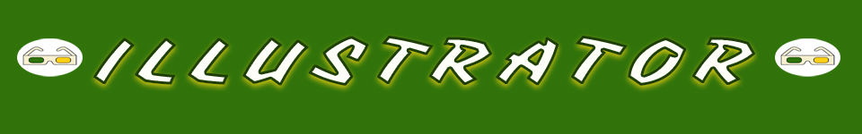
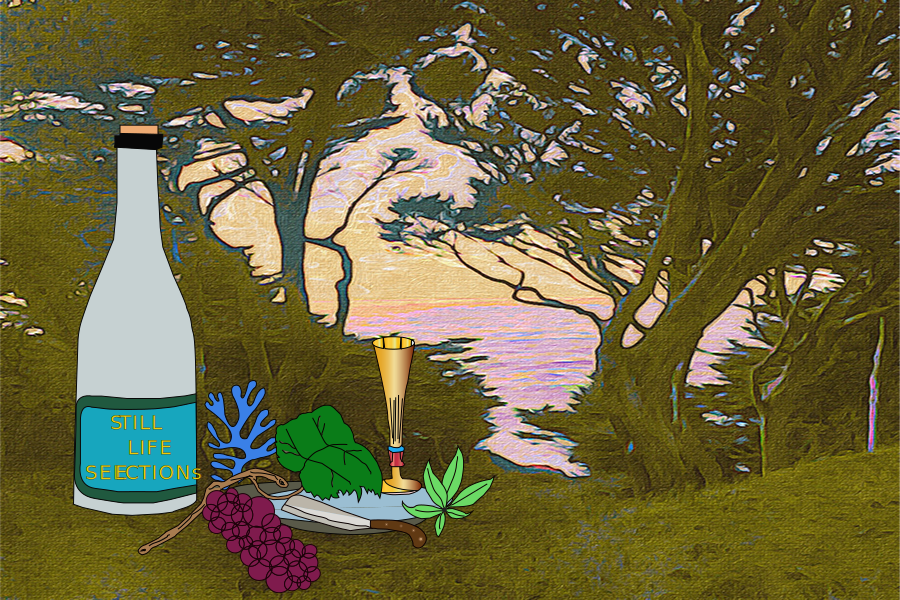

Home
Photoshop
Illustrator
Animate
Indesign
Contact

For my Illustrator project I created a mock logo for my fictional (but perhaps one day real!) wine importing company.
I started with various still life painting raster images and traced the elements in them using the pen tool.
The grape vine, glass, knife, plate, foilage and bottle combined would portray a sense of enjoying the wine.
I used the background of Land's End to tie in a connection to San Francisco.